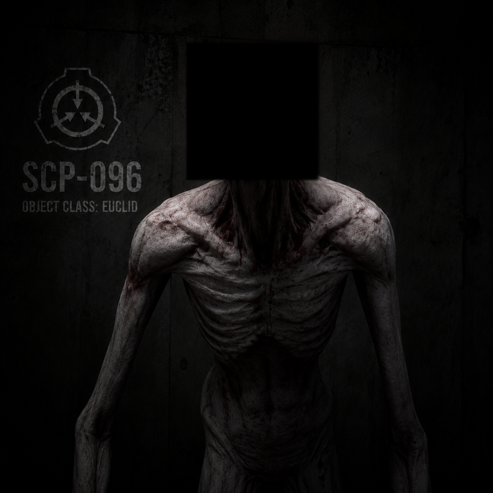

Containment Procedures
SCP-096 is to be contained in a standard humanoid containment chamber at Site-19. The chamber is to be lined with sound-dampening material and equipped with a video feed for observation. All personnel entering SCP-096's chamber must wear blindfolds and be guided by a second operator. In the event of a containment breach, all personnel are to evacuate the immediate area and await further instructions from Site Command. Mobile Task Force Epsilon-6 ("Village Idiots") is to be deployed with extreme prejudice.
Description
SCP-096's face is devoid of any distinguishing features; when agitated, the flesh of its face will retract and reveal musculature and tendons. The creature possesses incredible jaw strength and can easily break through most barriers. SCP-096 will pursue its target relentlessly, showing no signs of fatigue or hesitation. It has been observed to swim, climb, and break through walls to reach its target.
Additional notes: SCP-096 appears to possess some level of intelligence, as it will sometimes wait for its target to lower their guard before attacking. It has been known to mimic human speech to lure victims into a false sense of security.